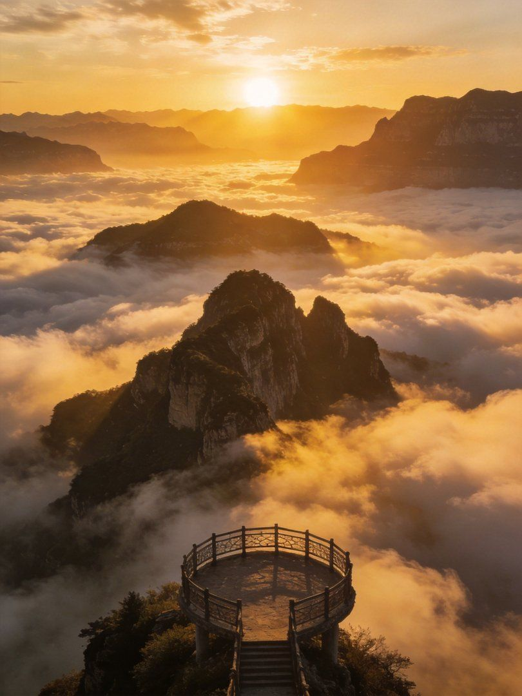

茱萸峰 · 云海之上ZHUYU PEAK · 王维诗意地
这是什么地方
- 云台山位于河南省焦作市修武县，是全球首批世界地质公园之一，也是太行山峡谷绝景的代表。
- 核心景观是红石峡（红岩碧水的丹霞峡谷，被誉为“华夏第一奇峡”）与茱萸峰（王维《九月九日忆山东兄弟》诗意地）。
- 还有云台天瀑（落差约 314 米）、潭瀑峡、泉瀑峡、猕猴谷、叠彩洞等，一票可玩遍。
玩几天 & 参考价格
- 建议 2-3 天；景区约 50 平方公里，景点分散，一天走遍核心区约需 5 万步。
- 门票+观光车联票约 ¥180（门票 120 + 观光车 60），3 天有效不限次。
- 茱萸峰/凤凰岭索道单程约 ¥65-70，全程约 ¥120；以景区当日为准。
💡 云台山四季各有美，7-8 月水量充沛看天瀑、秋高气爽看红岩红叶；夏季是绝佳避暑地，均温约 25℃。